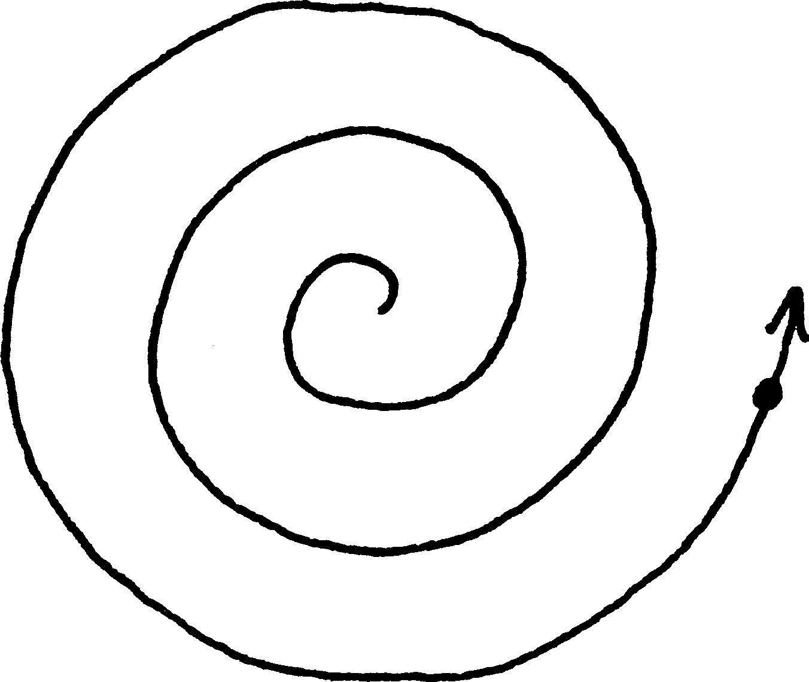
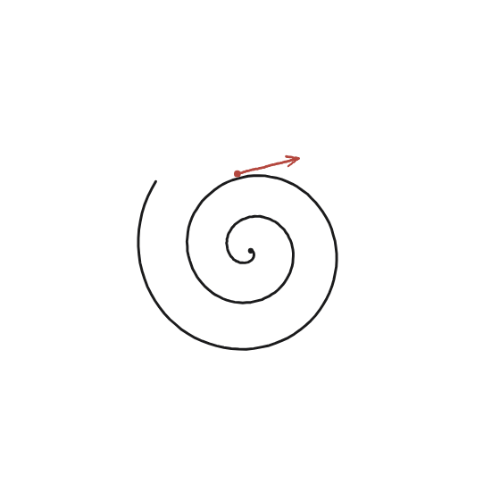

Com podem veure una espiral com el resultat d'un moviment?

Què hem de produir
Una descripció d'un punt en moviment de manera que la seva trajectòria sigui exactament l'espiral: dues coses que han de canviar alhora, i com.
Comença pel cas que ja es coneix
Un cercle és el resultat d'un punt que gira a distància constant d'un centre. Una espiral és quasi el mateix moviment, amb un únic canvi: què li hauria de créixer, a mesura que el punt gira, perquè cada volta quedi més enfora que l'anterior?
La construcció

Tancar-ho
El punt gira a velocitat angular constant —com les busques d'un rellotge— mentre, alhora, la seva distància al centre creix a velocitat constant amb el temps, no accelerada. Aquestes dues coses juntes —gir uniforme i allunyament uniforme— defineixen l'espiral d'Arquimedes.
Una espiral d'Arquimedes és la trajectòria d'un punt que gira a velocitat angular constant mentre, alhora, s'allunya del centre a velocitat constant —el mateix moviment que traça un cercle, amb el radi deixat créixer uniformement en lloc de fix.
Comprovació
Si la distància creix a raó d'una unitat per volta completa, després de 3 voltes el punt és a distància 3 del centre —el mateix patró que fa que les espires successives quedin sempre separades per la mateixa distància, com als solcs d'un disc de vinil.
Descriure una corba com el resultat d'un moviment —en lloc de com una equació o una construcció estàtica— és exactament la mateixa idea que retrobaràs a la qüestió 123 amb l'hèlix —gir uniforme, combinat amb pujada uniforme en lloc d'allunyament— i, més endavant, amb les cicloides, un cercle que rodola sobre un altre.